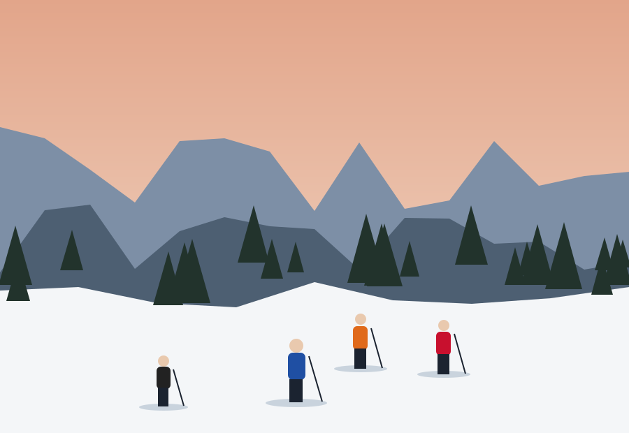
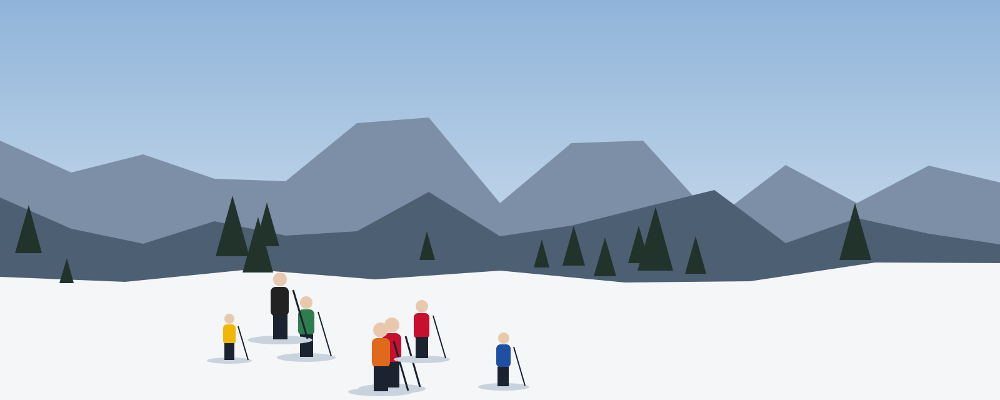
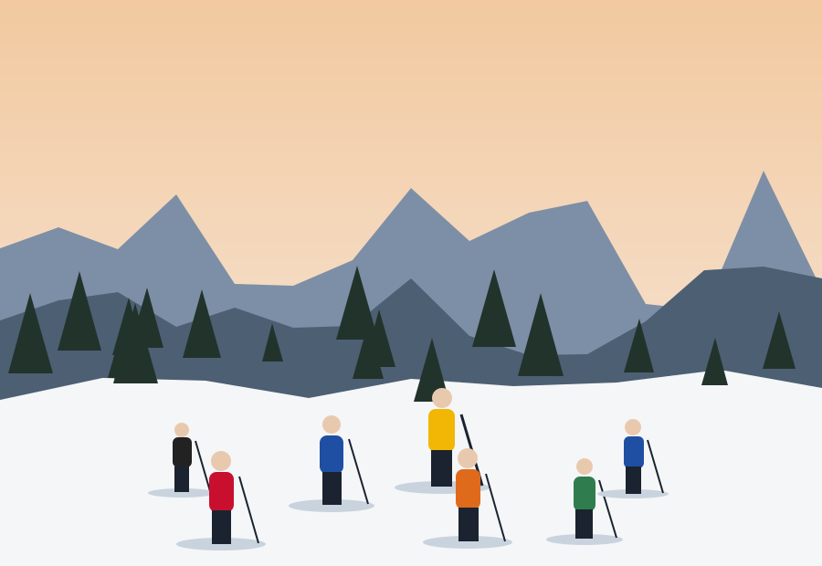
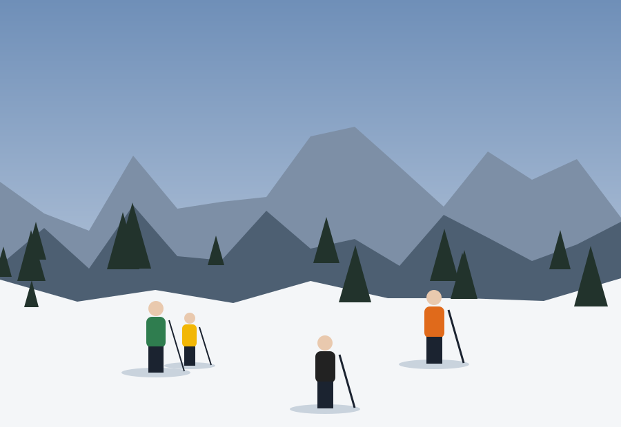
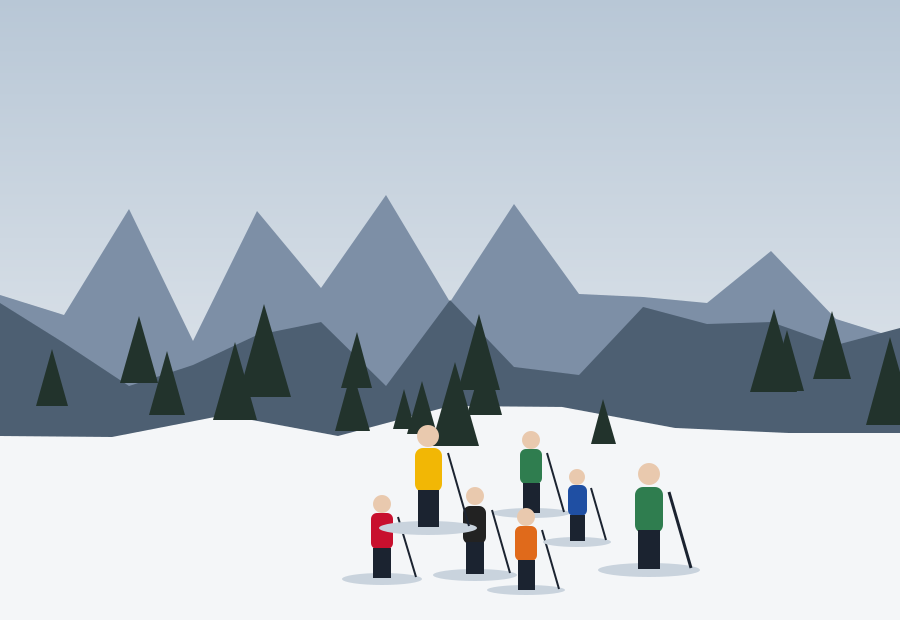
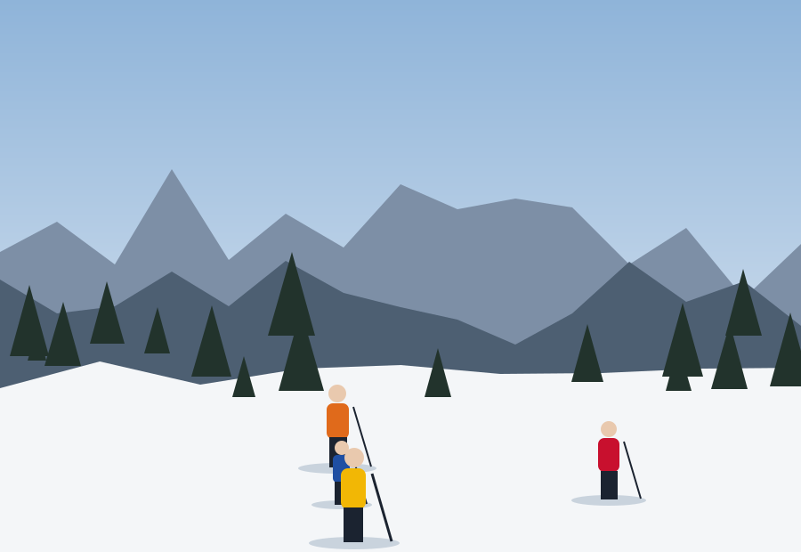
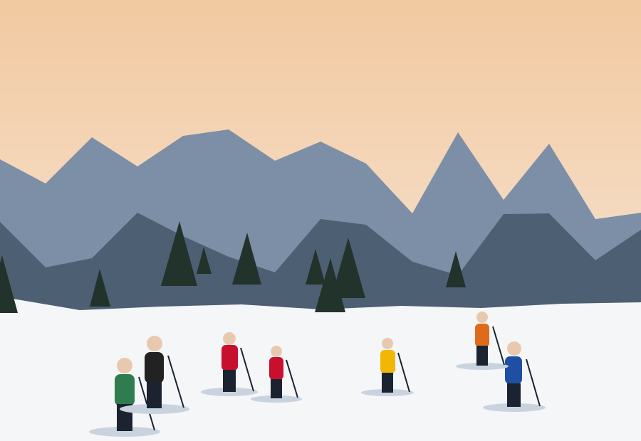

Time trial results
Forty-one skiers finished the 5 km course on rollerskis. Full times are posted, with splits for each lap.

The page now follows the order the 51 surveyed club sites pointed to: who the club is, how to join or support it, what it offers, where and when it meets, news, and supporters. Corners are rounded a little, the heavy rules and hard shadow are gone, and capitals are kept for the club name and section headings. Try "Club has no photos" and "Club posts no news" to see the page a club with neither would get.
Ridgeline Nordic is a volunteer-run cross-country ski club in the Chugach foothills. Beginners are welcome, and we lend gear for a skier's first season.


Ages 6 to 13
Games and skills on snow with volunteer coaches. No experience needed.
Tuesdays and Thursdays, 5:30

Ages 14 to 19
Training five days a week and a regional race calendar from December to March.
Weekdays, 4:15

Adults
Coached technique sessions and a long group ski for every pace.
Wednesdays, 6:30, and Saturdays, 10:00
Forty-one skiers finished the 5 km course on rollerskis. Full times are posted, with splits for each lap.

Bring outgrown boots and poles to the gym between 10 and noon.

Six volunteers lead the junior groups this winter. Two of them learned to ski here.
